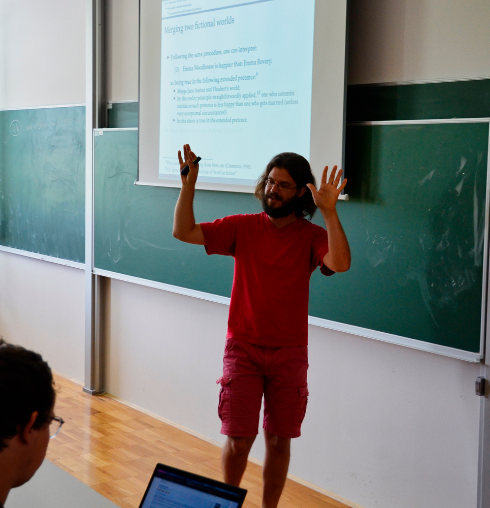

Academic interests
I am a philosopher of language, working as an FCT junior researcher in Lisbon at LanCog, on a project entitled "The dynamics of fictional names", and previously working as an FNRS postdoc in Liège, on a project entitled "A new defence of antirealism in the philosophy of fiction".
The contemporary philosophy of fiction is a complex field which articulates several domains of philosophy. For instance, philosophers of fiction raise questions of aesthetics (What counts as a good or bad fiction?), of philosophy of art (What is the difference between pictorial and linguistic fictions?), of epistemology (Can we learn from fiction?), of philosophy of mind (What is imagination?), of metaphysics (What is the difference between fiction and non-fiction?), of philosophy of language (What is the difference between real names and fictional names?), of ontology (Do fictional characters exist?), etc. I have already contributed to many of these areas: check the output section for more detail, and do not hesitate to reach out if, for some reason, you cannot get a copy of my papers. The underlying idea driving all my research in the philosophy of fiction is a kind of antirealism, viz. the thesis that fictional characters do not exist. Surprisingly enough, antirealism is a minority view in the field to day. I'm working on changing this!
Recently, I also opened two other lines of research which are to grow in the near future. One is in the philosophy of literature, where I am actively contributing to defining and analysing literary metafictions, i.e. these fictions which are reflexive, or self-conscious in some sense to be explained. The other is in the philosophy of linguistics: with Hugo Dumoulin, we wtarted a running research seminar at Modyco (Nanterre) on the interplay between structuralism, the analytic philosophy of language, and generative linguistics, where one can find dense and fascinating controversies about the objects and methods of linguistics.
Philosophy of language, literature and linguistics: here are the three vertices of my favourite semiotic triangle!
You can reach out using my ULisboa address: rouillel[at]edu.ulisboa.pt
Cette page est écrite à la main et ne contient aucun élément malveillant destiné à sonder les reins et les cœurs de votre machine. Le contenu de cette page est publié sous la licence libre suivante:
Attribution - Partage dans les Mêmes Conditions 4.0 International (CC BY-SA 4.0).